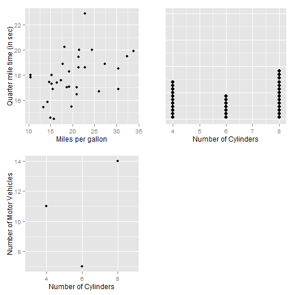
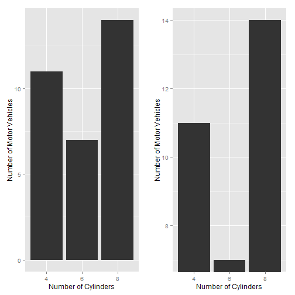
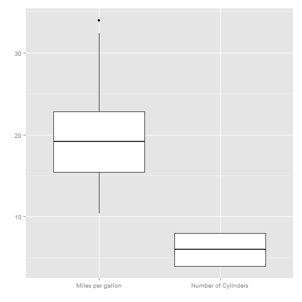
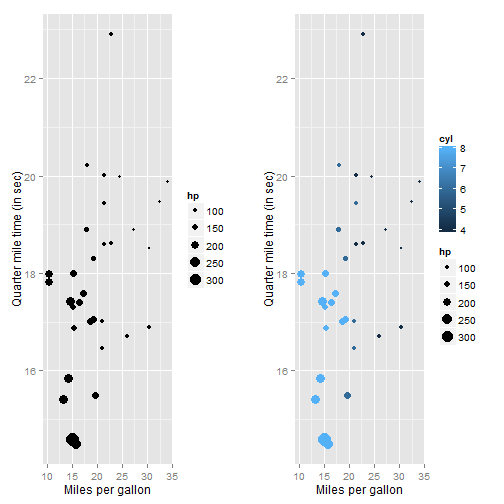
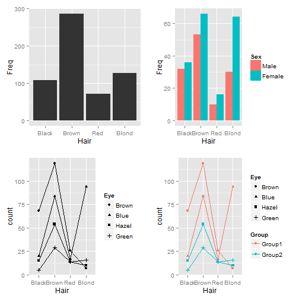
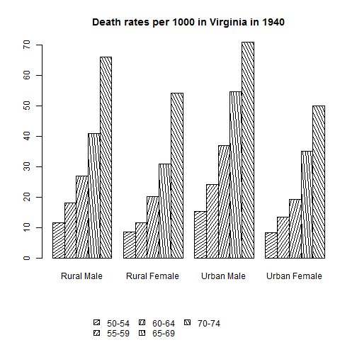

Visual Perception and Variations in Graphs
Vivek Patil, Ph.D.
Associate Professor of Marketing
Sensory Bandwidths
Memory

Number of 5s

Number of 5s


Limits to Distinct Perception
- Ability to distinguish diminishes with increase in alternatives
- ~ 8 different hues, 4 different orientations and 4 different sizes
- Number of visual attributes at a time also severely limited (1 at a time)
Pattern Recognition: Gestalt Principles

Perceptual tasks and accuracy

Bar, bubble and heatmap

Representation of quantitative values
- points
- lines
- bars
- boxes
- shapes with varying 2-D areas
- shapes with varying color intensity
Points - scatter and dot

Lines
Connect individual data values and/or display overall trend

Bars
line + width with no information = possibly better interpretation

Always start with a base of ZERO for Bar Charts
Boxes

Shapes with 2-D areas (area-graphs)

Shapes with 2-D or Bars?

Bubble plot

Encoding Categorical Variables
- 2D position
- Hue
- Point Shape
- Fill pattern
- Line Style
Encoding Categorical Variables

Encoding Categorical Variables

Categorical Variable ---AAHHHHH!

Relationships usually displayed in graphs
- Time Series: Changes in variable(s) over time (Change, rise, increase, fluctuate, grow, decline, decrease, trend)
- Ranking (larger/smaller/equal to/greater/lesser)
- Part-to-whole (rate/percent/share of total/accounts for n percent)
- Deviation (absolute/percentage/rate of deviations from a reference value,)
- Distribution (frequency, distribution, range, concentration, normal)
- Correlation (how variables covary - increases/decreases/changes with, caused by, affected by)
- Geospatial (spatial, geographical - county/city/region/state/...)
- Nominal comparison (simple comparison of categorical variables - alphabetical/ascending/descending)
Nominal Comparisons

Time Series

Ranking

Part-to-Whole

Part-to-Whole
Pie-charts, for their disadvantages, are easily recognized. Can use bars close to each other.

Deviation Designs

Studying Distributions

More distributions

Correlations

Geo-Spatial Designs

Geo-Spatial Designs

Geo-Spatial Designs

Geo-Spatial Designs

Acknowledgement for images, content used in the presentation, and code for presentation
https://github.com/patilv/02-PerceptionandVariationsinGraphs